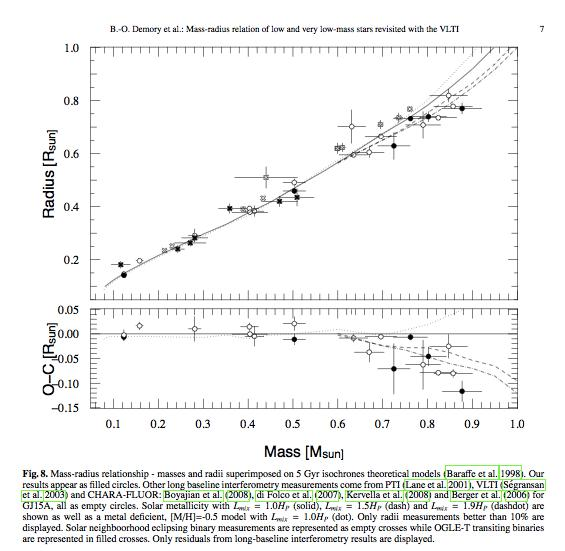

Figure
1:
HR diagram evolution of the 023NoFusionepsL2 case. Notice the one wonky point around 4000K, but also the fact that the model evolves onto the same cooling track that the higher mass converged models do, too.
Date & Time: April 24, 2012
Location: Home
Computing context: Macho Mac: /Desktop/Research/BodenheimerCode/workingdir/UnalteredCode/
Scripts/Software created today:
Useful computer stuff figured out today:
Continuing from last time:
Upload my group meeting presentation and advisor meeting notes to the wordpress blog
Email the people I want to be on my quals committee
The low-mass stellar mass-radius relationship from last time:

Low mass stellar
mass-radius relation taken from "Mass-radius relation of low
and very low-mass stars revisited with the VLTI" Authors:
Demory, B.-O.; Ségransan, D.; Forveille, T.; Queloz, D.; Beuzit,
J.-L.; Delfosse, X.; di Folco, E.; Kervella, P.; Le Bouquin, J.-B.;
Perrier, C.; Benisty, M.; Duvert, G.; Hofmann, K.-H.; Lopez, B.;
Petrov, R. Astronomy and Astrophysics, Volume 505, Issue 1, 2009,
pp.205-215
Link to the arXiv
article: http://arxiv.org/abs/0906.0602
Link to the ADS
entry: http://adsabs.harvard.edu/abs/2009A%26A...505..205D
Figure
0.1:
It's important to remind myself that the reason for figuring out what's going on with this particular case is that I need to be confident that once I feed TheCode.f a jupiter-mass and -luminosity input model, it won't crash or go off the rails and produce a physically un-possible result. To that end, I should also make sure to run a 0.1Msun model through TheCode.f in more detail and see what's been causing that case to crash. Is it a luminosity lower-limit thing? Is it something to do with TheCode.f not being able to successfully invert a Henyey matrix containing a wide dynamic range of values? This is the heart of what I need to figure out, here.
My (Tentative) Guide to Getting These No Fusion Models To Converge In Peter's Code:
1. Converge one timestep with fusion to go from the polytropic input --> more realistic profile.
2. Run the result through 1 timestep of the code withOUT fusion --> no-fusion profile. Make sure to turn Cwrk on, increase the limits on SMAX lum, and set SMIN lum to 1(?).
3. Run the result through as many timesteps of the NO fusion code as possible. Make sure to decrease epsL (to prevent the model from wandering into problematic regions of solution space). Also make sure to raise the ITMX limit to compensate for the fact that the code is going to have to search the soln space a lot more rigorously to find a solution that satisfies these stricter requirements.
"From watching the runs' progress (w/ my "follow" program), it looks to me like there's always a point between the 500th and 600th timesteps where the dTime values, which had been steadily increasing until then, suddenly have to decrease by an order of magnitude in order for the simulation to continue. Once the simulation is past that critical point or bottleneck or whatever it is, then the run proceeds smoothly and the dTime values resume their steady increase.
In light of that behavior that I've seen crop up in the 0.24, 0.27, and 0.235 Msun systems (can't remember if I saw it in the 0.29 and 0.25 Msun runs or not), I should see how dTime varies with time in these runs, and see also how the surface temperature, luminosity, pressure, and radius depend on these dTime values. It may be that the lower-mass systems that haven't managed to converge beyond ~600 timesteps may be getting thrown off the rails at the same point due to limits on how may dTime decreases are currently allowed w/in the design of TheCode.f before the program just gives up and says "STOP: convergence not possible."
"From looking at the results in Figure 5, it looks to me like the size of the timestep is not the primary problem. Rather, it's one of two other things:
1. The rate at which the timestep size can change, and/or
2. The epsL convergence constraint needs to be tighter for systems less massive than ~0.27Msun (to prevent the 'jittering' or 'flips' in the surface temperature and/or internal luminosity profiles)."
To Do Today:
Try
to modify TheCode.f to attempt to get convergence by reducing the
dTime value more than just three times before declaring the model
'impossible to converge.'
Go
thru TheCode.f (unaltered version) and map out in detail precisely
how it goes about decreasing the timestep size
Literally,
write out by what factor dTime gets decreased on each pass
Consider
writing a little python script that starts with dTime = 100, and
then prints out the new dTime on each decrease pass, so you can
see by what percent dTime gets reduced each time.
Write
up a plan for how you want to alter TheCode.f's dTime decrease
prescription.
Consider
testing this plan out with that same python script, just so you
don't end up doing something terrible to TheCode.f by accident
that causes its dTime modules never to work again.
Done. Did this by changing the maximum value on konv from 7 to 18 in TheCode.f (in the main/stellar routine). Now, TheCodeNoFusion can decrease the timestep size by ~8 orders of magnitude before giving up.
Am now re-running the 023NoFusionepsL1 case through the code to see if it can manage to converge, now.
Still only gets to model #639, though.
Changed the epsL parameter to 1e-5 (from 5e-5), increased the ITMX to 200 (from 80) and re-ran the simulation, now christened 023NoFusionepsL2.
It got through all 900 timesteps! There's one slight blip in the overall luminosity/surface temperature about 2/3 of the way through the simulation, but it evolves onto the same cooling track that the higher mass converged models do.
A quick grep of the output text file shows that TheCode's ability to decrease the timestep size more than 3 times before aborting is *not* what made the difference in this run. The timestep size was only ever decreased a maximum of 2 consecutive times. Rather, I think a combination of the stricter luminosity convergence requirements and the larger number of allowed iterations are what guided this run to convergence.
Here's its HR diagram evolution (Figure 1):
HR diagram evolution
of the 023NoFusionepsL2 case. Notice the one wonky point around
4000K, but also the fact that the model evolves onto the same
cooling track that the higher mass converged models do, too.
Figure
1:
Since this approach worked so well, I'm going to re-try the 0.2MsunNoFusion case. If that one also makes it through all 900 timesteps, I'll have another go at the 0.1MsunNoFusion setup.
02NoFusionepsL1 case completes all 900 timesteps. (Seems to slow down somewhere around the 700th timestep, but then speeds back up once it hits the upper 700's... similar to what the other cases have been doing; maybe also negotiating the same 'tricky' parameter-space territory that the other systems hit somewhere in the mid-600's/700th timesteps). I wonder if re-trying this run with an even more stringent epsL constraint will prevent these flips from happening?
Results (Figure 2):
Results from the
02NoFusionepsL1 run. Notice the handful of luminosity/surface
temperature 'flips' in there, which were *not* eliminated by further
decreasing the epsL parameter to 4e-6. I really wonder what's going
on, mathematically and physically, in the portion of the evolution
where these flips always show up, and/or the convergence becomes a
lot slower. It seems like the model is barely changing at all,
there. Why is its evolution so fraught?
Figure
2:
02NoFusionepsL2: set epsL = 4e-6, ITMX = 500. Sadly, it exits on timestep 605 with "ERROR EXIT IN SUBROUTINE GIRL". A few timesteps prior to that, though, it did make successful use of TheCode.f's new ability to decrease the timestep size more than 3 consecutive times without barfing. So, to answer the question posed in the paragraph above: no. See also: Figure 3.
A summary of the
ill-fated 02NoFusionepsL2 run. All plots except the HR diagram
(upper left) include data from the successful 02NoFusionepsL1 run
for comparison.
Figure
3:
Stuff I'm going to set up and leave running overnight:
A 1Msun no-fusion evolution with the epsL parameter decreased (and ITMX increased)
Name of this run: 1NoFusionepsL1
A 0.1Msun no-fusion evolution with the epsL parameter decreased (and ITMX increased)
Name of this run: 01NoFusionepsL1
--> Start here tomorrow to see how those runs panned out.
Write a little shell script (or python script?) to do the scp backups from this machine to the campus servers automatically
And then really, really: back up the contents of this machine to the campus server.
Find a source/citation with the brown dwarf evolutionary track(s), and:
plot those evolutionary tracks on my HR evolution diagrams
try to extrapolate them up the HR diagram to the region of parameter space occupied by these no-fusion models I've been running
...and see how well the two do or don't match up, and if the latter, why.
Download my own C++ code from the campus server
Create the proper directory structure for that on this machine
Test that my code will at least compile (and hopefully, also run) on this machine
Look into adding the atmospheric calculations that are in TheCode.f here into my C++ code.
Email potential committee members about sitting on my qual
Find three potential dates and times
Email Greg to confirm he'll be in town during those times
Find the email addresses for the rest of the people I'm asking
Email them.
Fill out the purchase order form
Go on Amazon and get prices/quotes for the equipment I need:
Replacement laptop battery
A lock for the laptop
A 1-Terabyte external hard drive
Print out the Amazon listings I find for the equipments and staple it to the PO.
Next steps: